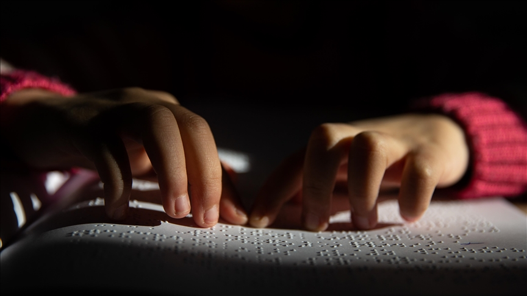

Blindness
Blindness is a visual impairment characterized by a significant loss of vision that cannot be corrected with standard glasses, contact lenses, or surgery. It can range from partial
vision loss to complete lack of sight. The causes of blindness include genetic conditions, eye injuries, diseases such as glaucoma, cataracts, or diabetic retinopathy, and infections.
Types of Blindness
Partial blindness:
Limited vision where individuals can still perceive light, shapes, or movement.
Total blindness:
Complete lack of vision, also known as no light perception (NLP).
Impact on Daily Life:
People with blindness face challenges in navigating the environment, performing tasks like reading, recognizing faces, and maintaining independence. They often rely on assistive technologies such as screen readers, braille, and white canes for mobility. Guide dogs and mobility training can also help.
Education and Support:
For individuals with blindness, specialized education programs and adaptive tools like braille books, auditory resources, and assistive software enable access to learning. Schools
for the visually impaired often focus on teaching life skills, orientation, and mobility, alongside academic subjects.
Public awareness and accessibility improvements have also contributed to improving the quality of life for people with blindness.
Ettiquettes while dealing with blind people
- Introduce Yourself: Always introduce yourself when you meet someone who is blind. Let them know who you are and that you’re speaking to them.
- Ask Before Helping: Don’t assume that a blind person needs assistance. Politely ask, “Would you like some help?” If they decline, respect their independence.
- Describe Your Actions: If you’re offering guidance or helping with something, describe what you’re doing. For example, “I’m going to place your hand on the railing.”
- Speak Directly: Always talk directly to the person, not to someone accompanying them. Use natural conversational tones and volume.
- Avoid Over-Assisting: Let them set the pace of the interaction. If they need help, they will ask. Over-assisting can be intrusive.
- Provide Detailed Directions: When giving directions, be specific. Instead of vague terms like "over there," use exact references such as "about five feet to your right."
- Use Verbal Cues: When ending a conversation or leaving a room, let the person know to avoid confusion. “I’m stepping out now,” is helpful so they aren’t left talking to
an empty space. - Respect Their Space: Don’t move their belongings without permission. This includes items like their cane, guide dog harness, or personal items.
- Offer Your Arm for Guidance: If a blind person needs help walking, offer your arm instead of grabbing theirs. Let them take your arm, and walk a half step ahead.
- Respect Guide Dogs: If the person is using a guide dog, do not pet or distract the dog while it’s working.
- Use Normal Language: Don’t shy away from words like "see" or "look." Blind people use these terms as well and won’t take offense.
- Communicate Clearly: Avoid assuming what a blind person can or cannot do. Instead, ask them how they prefer to approach a task or situation.